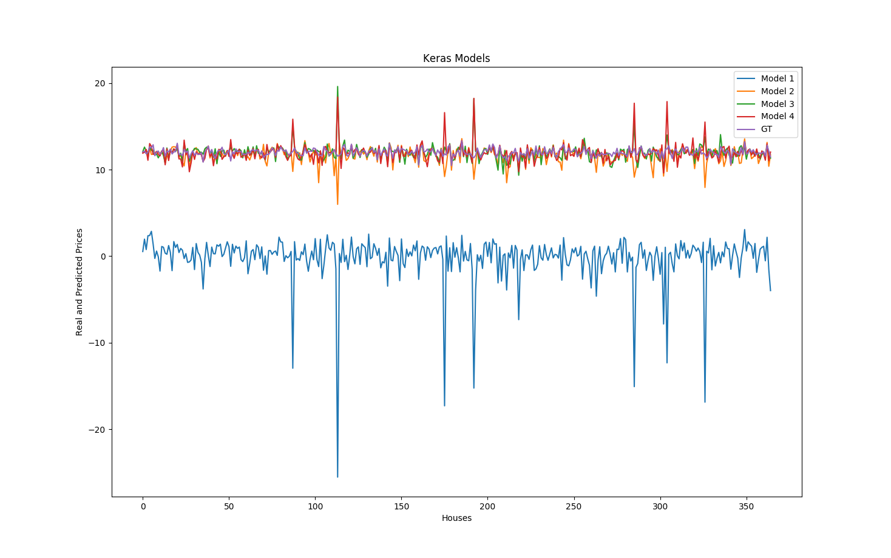
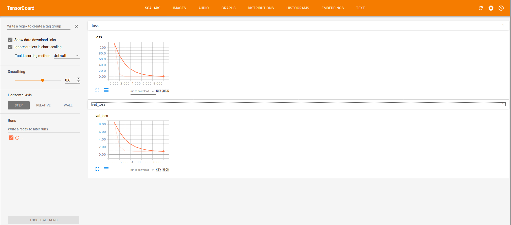

In this post, I will explain how to perform a simple regression with Keras - Tensorflow backend.
I will use the data from
Installing Tensorflow and Keras
Being on a Linux OS, I chose to install Tensorflow from sources. These are the command that I used for Ubuntu 16.04, with GPU support and SSEx support.
sudo apt-get install python-numpy python-dev python-pip python-wheel
sudo apt-get install libcupti-dev
git clone https://github.com/tensorflow/tensorflow
cd tensorflow
./configure
bazel build -c opt --copt=-mavx --copt=-mavx2 --copt=-mfma --copt=-mfpmath=both --copt=-msse4.2 --config=cuda -k //tensorflow/tools/pip_package:build_pip_package
bazel-bin/tensorflow/tools/pip_package/build_pip_package /tmp/tensorflow_pkg
sudo pip install /tmp/tensorflow_pkg/tensorflow-1.1.0-py2-none-any.whl # use completion to get the right .whl file
Now is a good time to test if the installation worked, by typing python in a new command window, and typing import tensorflow to check if everything worked!
Now let's move on to the Keras installation. Simple as that:
sudo pip install keras
The Tensorflow backend should be the one by default.
Getting and formatting the data
You can download the data from
Now, we have the Python packages, we have the data. let's get started:
# Data preprocessing; from https://www.kaggle.com/apapiu/regularized-linear-models/notebook/notebook
# loading data
train = pd.read_csv("/path/to/your/datasets/train.csv")
test = pd.read_csv("/path/to/your/datasets/test.csv")
dataset = train.values
all_data = pd.concat((train.loc[:, 'MSSubClass':'SaleCondition'],
test.loc[:, 'MSSubClass':'SaleCondition']))
# log transform the target:
train["SalePrice"] = np.log1p(train["SalePrice"])
#log transform skewed numeric features:
numeric_feats = all_data.dtypes[all_data.dtypes != "object"].index
skewed_feats = train[numeric_feats].apply(lambda x: skew(x.dropna())) #compute skewness
skewed_feats = skewed_feats[skewed_feats > 0.75]
skewed_feats = skewed_feats.index
all_data[skewed_feats] = np.log1p(all_data[skewed_feats])
all_data = pd.get_dummies(all_data)
#filling NA's with the mean of the column:
all_data = all_data.fillna(all_data.mean())
#creating matrices for sklearn:
X_train = all_data[:train.shape[0]]
X_test = all_data[train.shape[0]:]
y = train.SalePrice
# Scale the data:
X_train_sc = StandardScaler().fit_transform(X_train)
X_tr, X_val, y_tr, y_val = train_test_split(X_train_sc, y, random_state=10)
We know have data in a numpy array, usable by Keras!
Defining Simple Neural Nets
We are now going to define three simple neural nets in order to process the data
def simple_model():
"""
Simple one Layer Network to estimate the sale price of the kaggle regression dataset.
This model was tested in the very good Kaggle Kernel: https://www.kaggle.com/apapiu/regularized-linear-models/notebook/notebook
:return: keras model
"""
# Create model
model = Sequential()
model.add(Dense(1, input_dim=X_train.shape[1], W_regularizer=l1(0.001)))
# Compile model
model.compile(loss="mse", optimizer="adam")
return model
def larger_model():
"""
Creates a larger model with 5 layers. The width of the layers are: k -> k -> k -> 6 -> 1.
:return: Keras model.
"""
# create model
model = Sequential()
model.add(Dense(X_train.shape[1], input_dim=X_train.shape[1], kernel_initializer='normal', activation='relu'))
model.add(Dense(X_train.shape[1], input_dim=X_train.shape[1], kernel_initializer='normal', activation='relu'))
model.add(Dense(X_train.shape[1], input_dim=X_train.shape[1], kernel_initializer='normal', activation='relu'))
model.add(Dense(6, kernel_initializer='normal', activation='relu'))
model.add(Dense(1, kernel_initializer='normal'))
# Compile model
model.compile(loss='mean_squared_error', optimizer='adam')
return model
def wider_model():
"""
Creates a Keras model that is wider than the dimension of the feature space.
The layers width are like this:
k -> 2*k -> k -> k -> 1.
:return: Keras model.
"""
# create model
model = Sequential()
model.add(Dense(2*X_train.shape[1], input_dim=X_train.shape[1], kernel_initializer='normal', activation='relu'))
model.add(Dense(X_train.shape[1], input_dim=2*X_train.shape[1], kernel_initializer='normal', activation='relu'))
model.add(Dense(X_train.shape[1], input_dim=X_train.shape[1], kernel_initializer='normal', activation='relu'))
model.add(Dense(X_train.shape[1], input_dim=X_train.shape[1], kernel_initializer='normal', activation='relu'))
model.add(Dense(1, kernel_initializer='normal'))
# Compile model
model.compile(loss='mean_squared_error', optimizer='adam')
return model
Training, Visualizing and Evaluating the Networks
We are now going to create the networks, train them and visualize the loss functions in Tensorboard.
# First model
model = simple_model()
hist = model.fit(X_tr, y_tr, validation_data=(X_val, y_val))
scores = model.evaluate(X_val, y_val, verbose=0)
print "Score = ", scores
# Second model
model_2 = larger_model()
# Create tensorflow call back to view the tensorboard associated with this model.
tbCallBack = keras.callbacks.TensorBoard(log_dir='Graph', histogram_freq=0,
write_graph=True, write_images=True)
tbCallBack.set_model(model_2)
# Training the model
hist2 = model_2.fit(X_tr, y_tr, validation_data=(X_val, y_val), callbacks=[tbCallBack])
scores = model_2.evaluate(X_val, y_val, verbose=0)
print scores
# Third model
model_3 = wider_model()
hist3 = model_3.fit(X_tr, y_tr, validation_data=(X_val, y_val))
scores = model_3.evaluate(X_val, y_val, verbose=0)
print scores
# Custom model
model_4 = custom_model()
hist4 = model_4.fit(X_tr, y_tr, validation_data=(X_val, y_val))
scores = model_4.evaluate(X_val, y_val, verbose=0)
print scores
The first network is really just one layer, so there is very little chance that is can perform well on this regression dataset. The second one has five layers, and performs quite well on this dataset. given the mean squared error, and the final values of the training and validation losses. The third model is wider than the second one, with the same number of layers, so the training loss is decreasing faster at first, but at the end of the epochs, it is slightly higher than the previous model loss. We are encountering some overfitting.
I used one more model, with four layers, but I added some regularizarion on the loss in the dense layers to prevent overfitting from happening. The model looks like this:
def regularized_model():
"""
Creates a Keras model with L1 regularization to prevent overfitting.
:return: Keras model.
"""
# create model
model = Sequential()
model.add(Dense(X_train.shape[1], input_dim=X_train.shape[1], kernel_initializer='normal', activation='relu',
W_regularizer=l1(0.1)))
model.add(Dense(X_train.shape[1], input_dim=X_train.shape[1], kernel_initializer='normal', activation='relu',
W_regularizer=l1(0.1)))
model.add(Dense(X_train.shape[1], input_dim=X_train.shape[1], kernel_initializer='normal', activation='relu',
W_regularizer=l1(0.1)))
model.add(Dense(1, kernel_initializer='normal'))
# Compile model
model.compile(loss='mean_squared_error', optimizer='adam')
return model
The Mean Squared Errors (MSE) and \( R^2 \) score on the validation set for each network give us a good idea on how well each network performs :
Model 1 MSE: 157.642418203 Model 2 MSE: 0.45207531213 Model 3 MSE: 0.727215002901 Model 4 MSE: 0.242687999482 Model 1 R^2: -18.3945460105 Model 2 R^2: 0.232034628877 Model 3 R^2: 0.170981182408 Model 4 R^2: 0.0963016233005
To visualize your loss in Tensorboard, all you have to do now is:
tensorboard --logdir /absolute/path/to/your/log/directory/Graph
On the "scalars" tab, you should be able to visualize the losses like this:
This tool may come in very handy when using a more complex network on a large data set; it allows to check if the network has actually converged or if some overfitting has occurred (if the test loss curve had increased a lot before the validation loss curve increased for instance).
You can get the code from this post at this Github page.